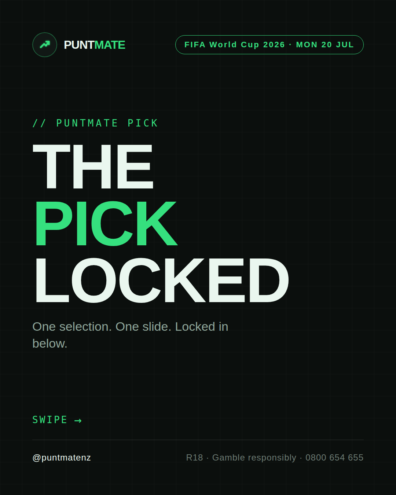
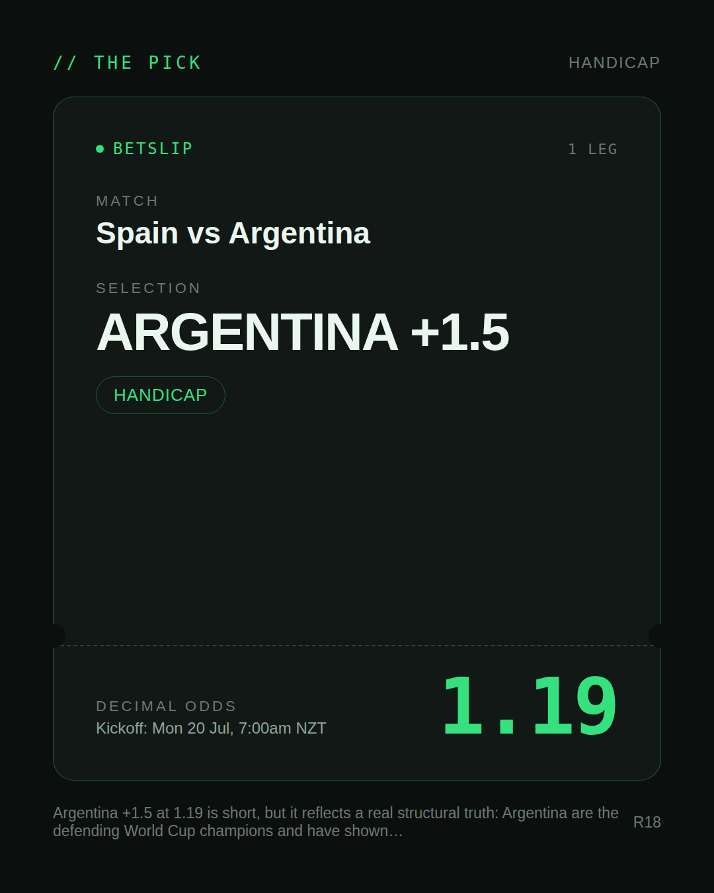
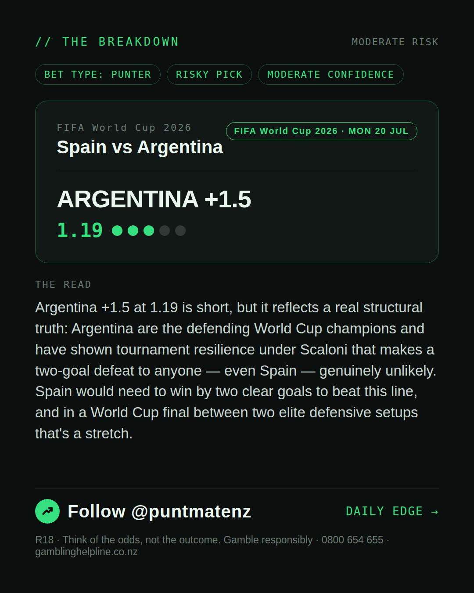
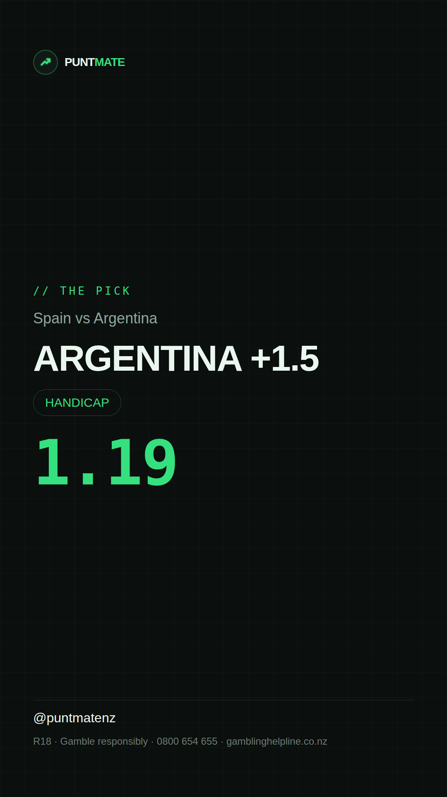

*🎯 PUNTMATE NZ — FIFA World Cup 2026* 🏟 Spain vs Argentina *PICK:* ARGENTINA +1.5 *ODDS:* 1.19 (Handicap) *BET TYPE: PUNTER* _Argentina +1.5 at 1.19 is short, but it reflects a real structural truth: Argentina are the defending World Cup champions and have shown tournament resilience under Scaloni that makes a two-goal defeat to anyone — even Spain — genuinely unlikely. Spain would need to win by two clear goals to beat this line, and in a World Cup final between two elite defensive setups that's a stretch._ ────────────────── 📲 Join Telegram for daily picks R18 · Gamble responsibly · Problem Gambling Foundation NZ: 0800 664 262
🎯 FIFA World Cup 2026 — Spain vs Argentina ARGENTINA +1.5 @ 1.19 (Handicap) BET TYPE: PUNTER Solid touch here. Not a lock, but the value's real and the form backs it up. Argentina +1.5 at 1.19 is short, but it reflects a real structural truth: Argentina are the defending World Cup champions and have shown tournament resilience under Scaloni that makes a two-goal defeat to anyone — even Spain — genuinely unlikely. Spain would need to win by two clear goals to beat this line, and in a World Cup final between two elite defensive setups that's a stretch. Follow for daily value picks → @puntmatenz Problem Gambling Foundation NZ: 0800 664 262 #PuntmateNZ #SportsBetting #NZTAB #FIFAWorldCup2026
| has_pick | True |
| pick_id | 2026-07-19_Spain_vs_Argentina_dryrun |
| run_id | 29682186805 |
| generated_at | 2026-07-19T09:49:16.059264+00:00 |
| post_date | 2026-07-19 |
| match | Spain vs Argentina |
| sport | soccer_fifa_world_cup |
| sport_label | FIFA World Cup 2026 |
| market | Handicap |
| selection | ARGENTINA +1.5 |
| odds | 1.19 |
| bet_type | PUNTER_BET |
| bet_type_label | BET TYPE: PUNTER |
| bet_type_reason | Solid touch here. Not a lock, but the value's real and the form backs it up. Argentina +1.5 at 1.19 is short, but it reflects a real structural truth: Argentina are the defending World Cup champions and have shown tournament resilience under Scaloni that makes a two-goal defeat to anyone — even Spain — genuinely unlikely. Spain would need to win by two clear goals to beat this line, and in a World Cup final between two elite defensive setups that's a stretch. |
| classification | RISKY_PICK |
| risk | RISKY_PICK |
| confidence | MODERATE |
| confidence_label | MODERATE |
| final_explanation | Argentina +1.5 at 1.19 is short, but it reflects a real structural truth: Argentina are the defending World Cup champions and have shown tournament resilience under Scaloni that makes a two-goal defeat to anyone — even Spain — genuinely unlikely. Spain would need to win by two clear goals to beat this line, and in a World Cup final between two elite defensive setups that's a stretch. |
| public_caution | Keep this one light — the value's there but so is the uncertainty. |
| theme | night |
| carousel_paths | ['data/review/2026-07-19_Spain_vs_Argentina_dryrun/cover.png', 'data/review/2026-07-19_Spain_vs_Argentina_dryrun/tip.png', 'data/review/2026-07-19_Spain_vs_Argentina_dryrun/breakdown.png'] |
| carousel_urls | ['https://raw.githubusercontent.com/kingofthecastle24/puntmate/main/data/cards/2026-07-19_Spain_vs_Argentina_night_1_cover.png', 'https://raw.githubusercontent.com/kingofthecastle24/puntmate/main/data/cards/2026-07-19_Spain_vs_Argentina_night_2_tip.png', 'https://raw.githubusercontent.com/kingofthecastle24/puntmate/main/data/cards/2026-07-19_Spain_vs_Argentina_night_3_breakdown.png'] |
| story_path | data/review/2026-07-19_Spain_vs_Argentina_dryrun/story.png |
| story_url | https://raw.githubusercontent.com/kingofthecastle24/puntmate/main/data/cards/2026-07-19_Spain_vs_Argentina_night_story.png |
| intended_platforms | ['telegram', 'instagram_feed', 'instagram_story', 'facebook'] |
| workflow_state | GENERATED |